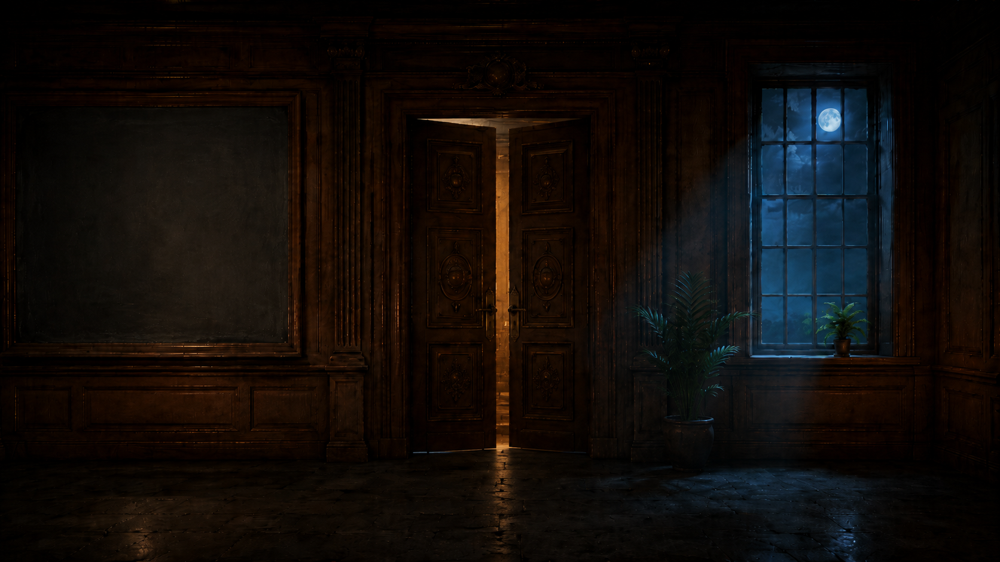
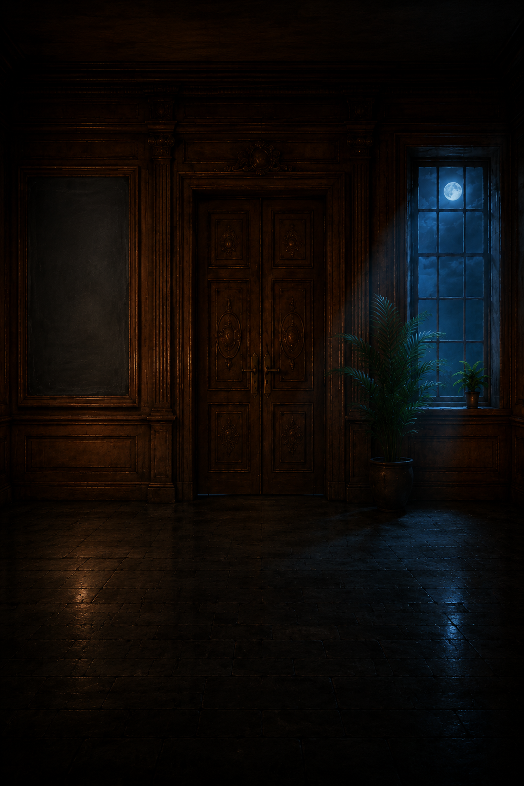
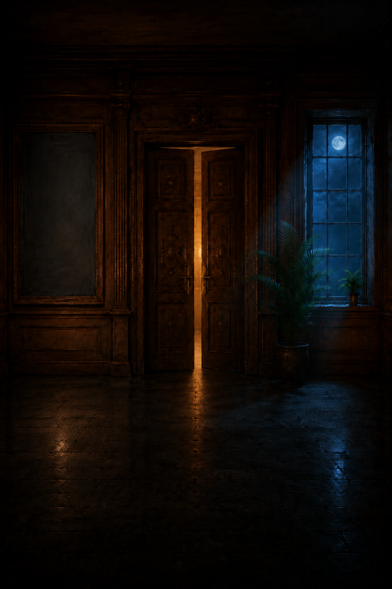
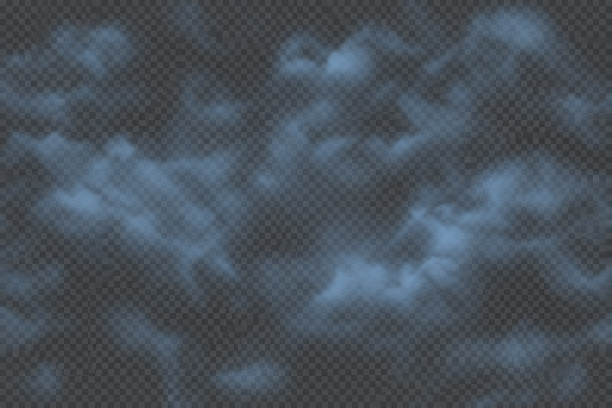

1 · Plate A quer (1672×941) — Tür zu, Tische entfernt, Pflanzen, Tafel frei
1 · Plate A quer (1672×941) — Tür zu, Tische entfernt, Pflanzen, Tafel frei

2 · Plate B quer — Tür offen

3 · Plate A hoch (1024×1536) — Tür zu

4 · Plate B hoch — Tür offen
5 · Scout (Rechercheur am Schreibtisch, leuchtender Schirm) — gemaltes Schachbrett, kein Alpha
6 · Warden (am Schreibtisch, Journalband, Lampe) — gemaltes Schachbrett, kein Alpha

7 · Wolkenebene (1536×1024) — gemaltes Schachbrett dunkel, kein Alpha; Kachel-Test siehe checks.txt